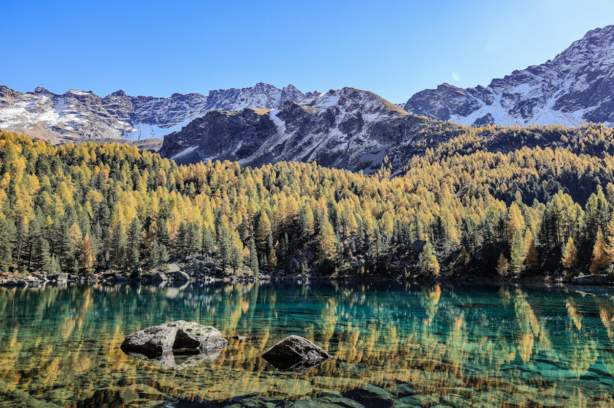
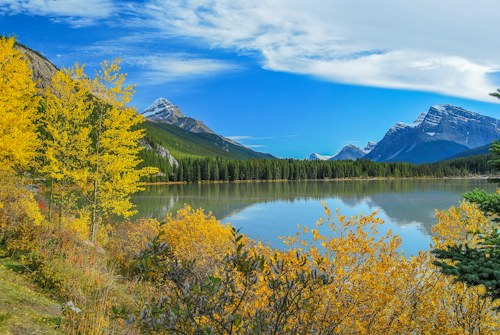
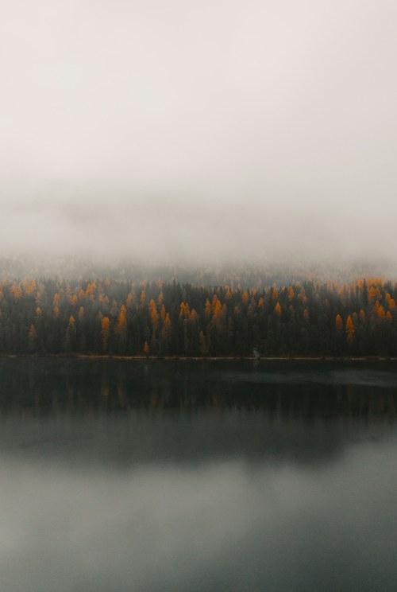
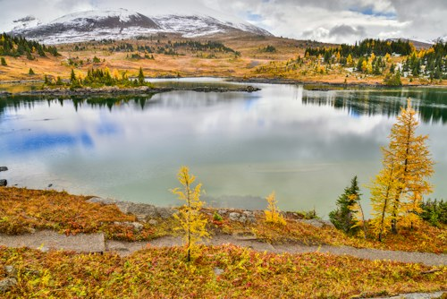
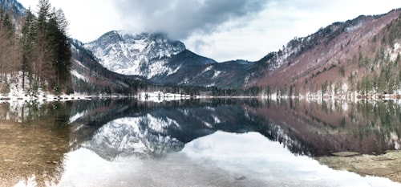

01 · SEASONS四季赏景资料
同一片山河，
四种完全不同的抵达
春花、夏绿、秋金、冬雪，一眼看懂什么时候适合出发。




首次推荐9—10月 · 晴天较多，彩林通透
想看绿意6—8月 · 草甸丰盈，雨雾偏多
想看雪境11月—次年3月 · 注意雪后路况
怎么选 · 三步决定出发时间
- 01先选风景：春看花与残雪，夏看草甸，秋看彩林，冬看雪境。
- 02再看天气：神山观景尽量安排在天气较稳定的上午。
- 03出发前一天确认道路、天气和景区当日开放线路。